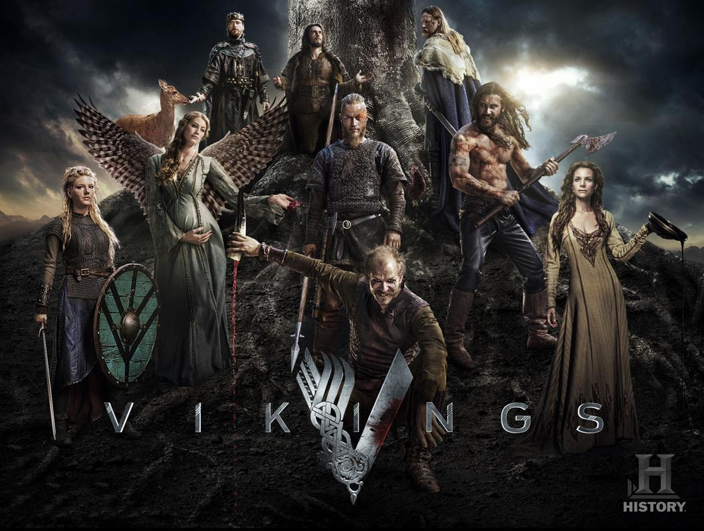

Temporada 1
Año: 2013
Conocemos a Ragnar Lothbrok, un granjero y guerrero que desea navegar hacia el oeste en busca de nuevas tierras. Junto a su hermano Rollo y su amigo Floki comienza una aventura que cambiará su vida.
De los primeros viajes de Ragnar a los caminos que eligen sus hijos, Vikingos recorre seis temporadas. Acá tenés una guía breve para ubicarte, sin entrar en los grandes giros de la historia.

Año: 2013
Conocemos a Ragnar Lothbrok, un granjero y guerrero que desea navegar hacia el oeste en busca de nuevas tierras. Junto a su hermano Rollo y su amigo Floki comienza una aventura que cambiará su vida.
Año: 2014
Ganar poder no le trae tranquilidad a Ragnar. Los acuerdos con otros líderes y los problemas dentro de su familia lo obligan a elegir en quién confiar.
Año: 2015
Los viajes llevan a Ragnar y a su grupo a desafíos más grandes. Cada conquista exige nuevos acuerdos, y mantener unido al grupo se vuelve más complicado.
Año: 2016
Las decisiones de Ragnar empiezan a pasarle factura. Mientras tanto, sus hijos crecen y buscan hacerse un lugar más allá del nombre de su padre.
Años: 2017 - 2019
Los hijos de Ragnar toman el centro de la historia. Cada uno quiere seguir su propio camino, y compartir apellido no alcanza para mantenerlos unidos.
Años: 2019 - 2020
La última temporada reúne las consecuencias de tantos años de viajes y enfrentamientos. Los personajes deben decidir qué quieren conservar y qué están dispuestos a dejar atrás.